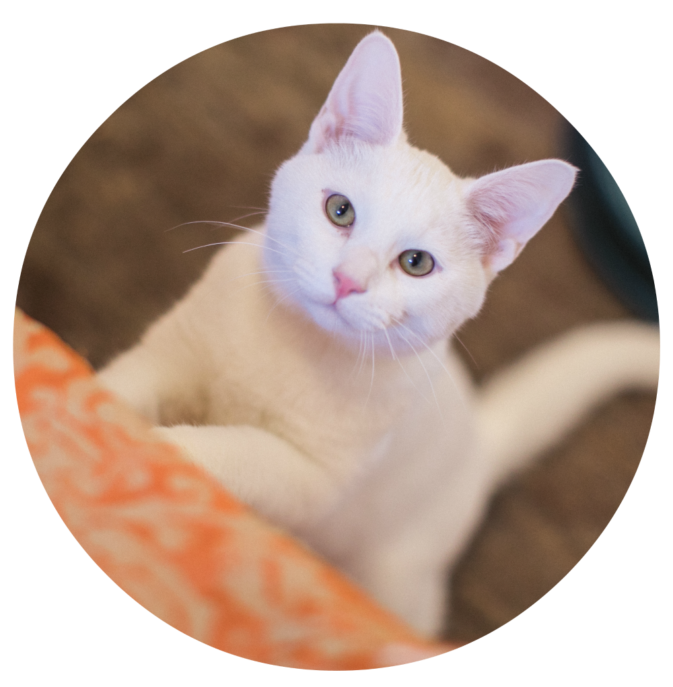

Айлурофобия

Айлурофобия является психическим расстройством, сопровождающееся патологической боязнью
кошек. Вообще, фобий насчитывается более 300 и айлурофобия, не самая страшная и необычная среди них.
Возникнуть такое патологическое состояние может в любом возрасте. Так как любая фобия развивается на
подсознательном уровне, в большинстве случаев больной не может назвать причину, по которой боится
кошек.